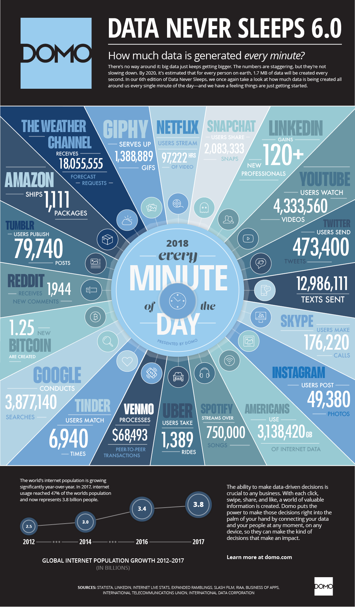

Big Data and Cloud Platforms (Module 2)
Cloud computing

https://xkcd.com/1444/
Reference scenario
The big-data cube (Meijer 2012)
- Volume: small to big
- Variety: structure to unstructured
- Velocity: pull to push

Reference scenario
Variety
- Structured
- Relational tuples with FK/PK relationships
- Unstructured
- Key-value
- Columnar
- Document-based
- Graph
- …


https://www.datamation.com/big-data/structured-vs-unstructured-data/ (accessed 2022-08-01)
Reference scenario
Velocity (latency)
- High: clients synchronously pulling data from sources
- Low: sources asynchronously pushing data to clients
Velocity (speed; dual to latency)
- High: processing in real-time (milliseconds) or near-real-time (minutes)
- Low: processing can take hours

Data never sleeps


DNS 10.0: over the years



Reference scenario
Plus other Vs
- Veracity: data trustworthiness/quality
- Value: ability to extract meaningful information
- …
Our focus
- (Un)Structured big-data batch
- (Un)Structured big-data streams
Goal: keep in mind the cube to categorize the services

Why moving to the cloud?
Digitalization is a journey that involves three main dimensions
- Moving from A to B is a multi-year process made of intermediate goals
- Each of which must be feasible
- Solves a company’s pain and brings value
- Can be accomplished in a limited time range (typically less than one year)
- Costs must be economically related to gains

Types of cloud
There are different types of cloud
- Public: accessible to anyone willing to pay
- Any resources that you are not using can be used by other
- Users share the costs
- E.g., Microsoft Azure, AWS, Google Cloud
- Private: accessible by individuals within an institution
- Cost-sharing disappears in private clouds
- Hybrid: a mix of the previous

Why moving to the cloud?
Hardware scalability
- No longer think about rack space, switches, power supplies, etc.
Grow storage from GBs to PBs
- 1PB: one hundred 10TB Enterprise Capacity 3.5 HDD hard drives

https://blog.seagate.com/business/linus-tech-tips-want-petabyte-system/
Virtualization
How do provide computational resources?
Containers and virtual machines are packaged computing environments
Containers
- On top of physical server and its host OS
- Share the host OS kernel
- Shared components are read-only
- “Light”, take seconds to start
Virtual machines
- Emulate a hardware/software system
- On top of a hypervisor (VM monitor)

Containerization isolates an application with its environment
- Lightweight alternative to full virtualization
- Containers are isolated but need to be deployed to (public/private) server
- Excellent solution when dependencies are in play
- Housekeeping challenges and complexities
Why moving to the cloud?
Reliability
- Built to handle failures
- Fault-tolerant or highly available

Physical Server Pools
Worldwide deployment
Cloud services are hosted in separate geographic areas
- Locations are composed of regions and availability zones
- Using regions and availability zones
Region (e.g., us-east-1)
- Is an independent geographical area that groups data centers
- Has availability zones
Availability zones in a region
- A data center
- Connected through low-latency links
- Resources are usually replicated across zones but not regions

Why moving to the cloud?

Service integration
- Do not reinvent the wheel, eliminate repetitive tasks
- Use services that solve common problems (e.g., queuing)
- Abstract and automatically adapt the architecture to requirements
- E.g., create (test) environments on demand
Integration and abstraction are drivers of change
- From databases to data platforms
- From on-premises to serverless architectures
- From custom to standardized data pipelines
Cloud computing: principal vendors

Data pipeline

https://xkcd.com/2054/
Data pipeline: a sequence of operations to transform and consume raw data
Data pipeline - AWS
Three main steps
- Ingest
- Gateway, DataSync (batch)
- Kinesis, SNS, SQS (stream)
- Transform and store
- S3 and Glacier (storage)
- Glue (ETL)
- Serve and consume
- EMR (Hadoop-like cluster)
- Athena (serverless query)
- Machine learning services

Data pipeline - Google Cloud
Three main steps
- Ingest
- Transfer service (batch)
- Pub/Sub (stream)
- Analyze
- Dataproc (batch)
- Dataflow (stream)
- Cloud storage (storage)
- Machine learning services
- Serve
- BigQuery (query service)

A tentative organization

Building blocks
A tentative organization
We have services
- To transform data
- To support the transformation
The (DIKW) pyramid abstracts many techniques and algorithms
- Standardization
- Integration
- Orchestration
- Accessibility through APIs

A tentative organization
This is not a sharp taxonomy
Storage vs Serving
- Databases are storage
- … with processing capability
- … and with serving capability

Is cloud a silver bullet?

Millions of websites offline after fire at French cloud services firm (2021)
Is cloud a silver bullet?


https://xkcd.com/908/
Cloud computing: deployment models
Understanding architectures is paramount to successful systems
- Good architectures help to scale
- Poor architectures cause issues that necessitate a costly rewrite

XaaS
Anything as a service (XaaS)
- A collective term that refers to the delivery of anything as a service
- It encompasses the products, tools, and technologies that vendors deliver to users
Cloud computing: deployment models
On-premises
- Provisioning servers is time-consuming
- A non-trivial environment is hard to set up
- Require dedicated operations people
- Often a distraction from strategic tasks

Cloud computing: deployment models
Infrastructure as a service (IaaS)
- A computing infrastructure provisioned and managed over the internet (e.g., AWS EC2)
- Avoid the expense/complexity of buying/managing physical servers/data centers
- IaaS overcomes issues on-premises
- Possibly requires managing many environments

Cloud computing: deployment models
Platform as a Service (PaaS)
- A development and deployment environment in the cloud (e.g., AWS Elastic Beanstalk)
- Support complete application life-cycle: building, testing, deploying, etc.
- Avoid the expense/complexity of managing licenses and application infrastructure

Cloud computing: deployment models
Function as a Service (FaaS)
- A coding environment, cloud provider provisions platform to run the code (e.g., AWS Lambda)
- Infrastructure provisioning and management are invisible to the developer

Cloud computing: deployment models

Cloud computing: deployment models
Software as a service (SaaS)
- An application environment
- Access cloud-based apps over the Internet (e.g., email, Microsoft Office 365, Github)

Cloud computing: deployment models
On a cloud architecture, you can rely on serverless or managed services (accessed 2020-08-01)

Serverless vs Managed

https://xkcd.com/1084/